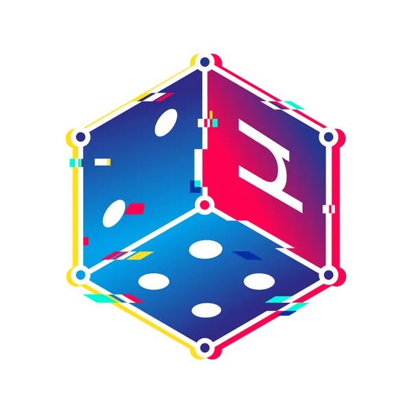
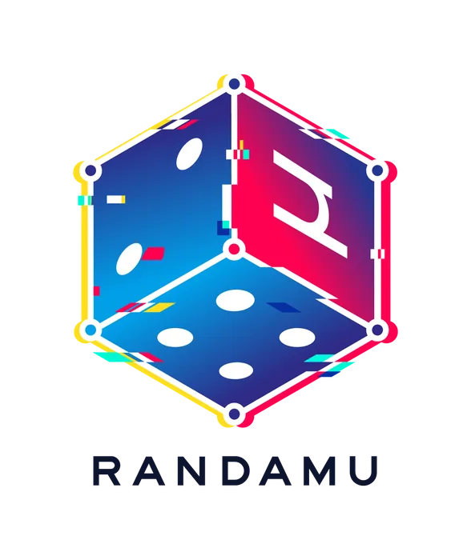
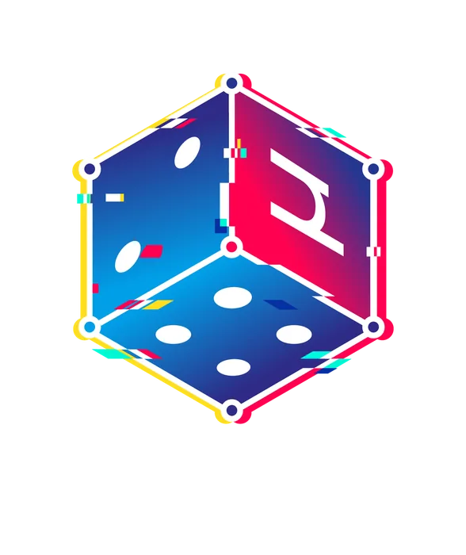
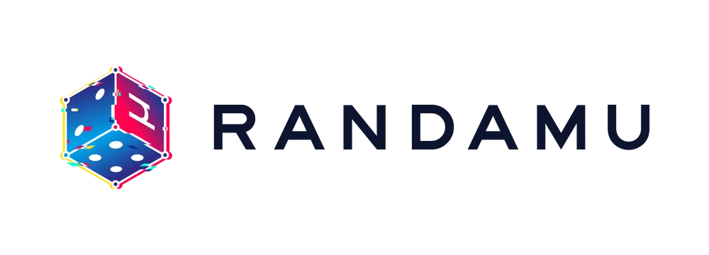

Randamu needed a mark that felt energetic, digital, and unpredictable — something that communicated the nature of distributed randomness without explaining it.
The logo is built around a glitch-treated isometric die. Chromatic aberration gives it a kinetic, tech-forward edge while the isometric geometry keeps it grounded and ownable at any size. The system includes full-colour, outline, and alternate treatments built for use across digital and physical applications.



